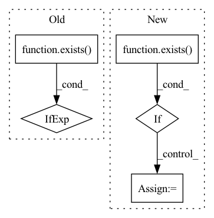

Pattern ID :1102
Before Change
nn.Linear(
in_features=context_time_features, out_features=out_channels * 2
),
)
if exists( context_time_features)
else None
)
self.block1 = ConvBlock1d(After Change
) -> None:
super().__init__()
self.use_mapping = exists( context_mapping_features)
self.use_embedding = exists(context_embedding_features)
self.block1 = ConvBlock1d(
in_channels=in_channels,
out_channels=out_channels,
num_groups=num_groups,
dilation=dilation,
)
if self.use_mapping:
assert exists(context_mapping_features)
self.to_scale_shift = MappingToScaleShift(
features=context_mapping_features, channels=out_channels
)
In pattern: SUPERPATTERN
Frequency: 3
Non-data size: 5
Instances Fragment ID: 3264304
Project Name: archinetai/audio-diffusion-pytorch
Commit Name: 3c710edf168da06dcc89c23ef12023d0f8b63043
Time: 2022-09-21
Author: flavio.schneider.97@gmail.com
File Name: audio_diffusion_pytorch/modules.py
M Class Name: ResnetBlock1d
N Class Name: ResnetBlock1d
M Method Name: __init__(0)
N Method Name: __init__(0)
M Parent Class: nn.Module
N Parent Class: nn.Module
M File Name: audio_diffusion_pytorch/modules.py
N File Name: audio_diffusion_pytorch/modules.py
M Start Line: 167
M End Line: 176
N Start Line: 147
N End Line: 163
Before Change
ConvOut1d(
channels=out_channels,
kernel_sizes=kernel_sizes_out,
)
if exists( kernel_sizes_out)
else nn.Identity(),
)
def get_channels(After Change
out_channels = default(out_channels, in_channels)
context_channels = list(default(context_channels, []))
num_layers = len(multipliers) - 1
use_context_features = exists( context_features)
use_context_channels = len(context_channels) > 0
context_mapping_features = None
self.num_layers = num_layers
self.use_context_time = use_context_time
self.use_context_features = use_context_features
self.use_context_channels = use_context_channels
self.use_post_out_block = exists(kernel_sizes_out)
context_channels_pad_length = num_layers + 1 - len(context_channels)
context_channels = context_channels + [0] * context_channels_pad_length
self.context_channels = context_channels
if use_context_channels:
has_context = [c > 0 for c in context_channels]
self.has_context = has_context
self.channels_ids = [sum(has_context[:i]) for i in range(len(has_context))]
assert (
len(factors) == num_layers
and len(attentions) == num_layers
and len(num_blocks) == num_layers
)
self.to_in = nn.Sequential(
Rearrange("b c (l p) -> b (c p) l", p=patch_size),
CrossEmbed1d(
in_channels=(in_channels + context_channels[0]) * patch_size,
out_channels=channels,
kernel_sizes=kernel_sizes_init,
stride=1,
),
)
if use_context_time or use_context_features:
context_mapping_features = channels * 4
self.to_mapping = nn.Sequential(
nn.Linear(context_mapping_features, context_mapping_features),
nn.GELU(),
nn.Linear(context_mapping_features, context_mapping_features), Fragment ID: 3264292
Project Name: archinetai/audio-diffusion-pytorch
Commit Name: 3c710edf168da06dcc89c23ef12023d0f8b63043
Time: 2022-09-21
Author: flavio.schneider.97@gmail.com
File Name: audio_diffusion_pytorch/modules.py
M Class Name: UNet1d
N Class Name: UNet1d
M Method Name: __init__(23)
N Method Name: __init__(21)
M Parent Class: nn.Module
N Parent Class: nn.Module
M File Name: audio_diffusion_pytorch/modules.py
N File Name: audio_diffusion_pytorch/modules.py
M Start Line: 823
M End Line: 938
N Start Line: 842
N End Line: 997
Before Change
// setting the device
if not exists(accelerator) and not exists( device):
diffusion_prior_device = next(diffusion_prior.parameters()).device
self.print(f"accelerator not given, and device not specified: defaulting to device of diffusion prior parameters - {diffusion_prior_device}")
self.device = diffusion_prior_device
else:After Change
self.scheduler = LambdaLR(self.optimizer, lr_lambda = lambda _: 1.0)
self.warmup_scheduler = warmup.LinearWarmup(self.optimizer, warmup_period = warmup_steps) if exists( warmup_steps) else None
// distribute the model if using HFA
Fragment ID: 3264297
Project Name: lucidrains/dalle2-pytorch
Commit Name: f9423d308b6f36e51152c2c45045ff4ebb308287
Time: 2022-07-20
Author: 51308183+nousr@users.noreply.github.com
File Name: dalle2_pytorch/trainer.py
M Class Name: DiffusionPriorTrainer
N Class Name: DiffusionPriorTrainer
M Method Name: __init__(10)
N Method Name: __init__(12)
M Parent Class: nn.Module
N Parent Class: nn.Module
M File Name: dalle2_pytorch/trainer.py
N File Name: dalle2_pytorch/trainer.py
M Start Line: 182
M End Line: 240
N Start Line: 177
N End Line: 246